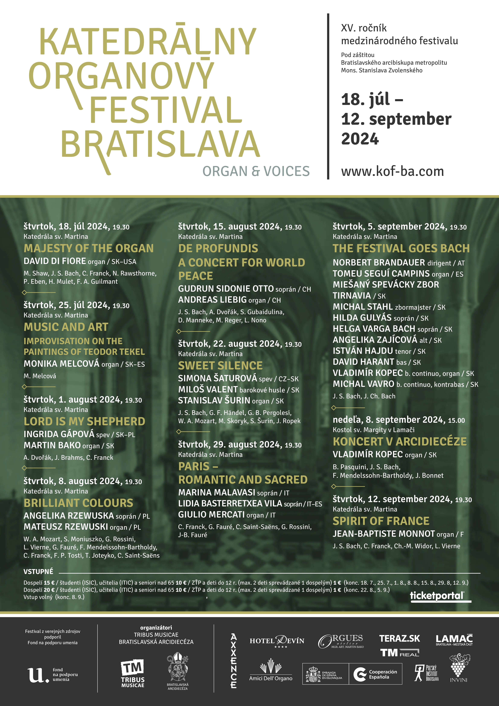

Informácie
Katedrálny organový festival Bratislava začal svoju históriu písať v roku 2010, kedy bol v Katedrále sv. Martina postavený nový organ Geralda Woehla. Zakladateľom festivalu, ako aj iniciátorom a manažérom stavby katedrálneho organa je organista Stanislav Šurin. Od počiatku svojho vzniku sa tento festival koná pod záštitou J. Ex. Mons. Stanislava Zvolenského, arcibiskupa metropolitu.
"Naše stretnutia s organovou hudbou sú príležitosťou, aby sme v spoločenstve vnímali našu ľudskú dôstojnosť pred Bohom aj prostredníctvom autorov, interpretov, hudobného nástroja a vnímavých poslucháčov vzácnych umeleckých diel. Ďakujem Vám, že ste prijali pozvanie na náš Katedrálny organový festival a obohatili nás svojou prítomnosťou."
Mons. Stanislav Zvolenský
Program
Pod záštitou Bratislavského arcibiskupa metropolitu Mons. Stanislava Zvolenského
Festival z verejných zdrojov podporil Fond na podporu umenia
A DIALOGUE OF STRINGS AND WIND
MARIA PERUCKA, | husle PL |; ROMAN PERUCKI, | organ PL |
24.07. - 19:30
Katedrála svätého Martina, Bratislava
MJ. S. Bach, J. Paderewski, M. Surzyński, F. Borowski, J. Langlais, E. Schneider
CHURCH AND CONCERT ORGAN MUSIC
ROBERTO PADOIN | IT |
31.07. - 19:30
Katedrála svätého Martina, Bratislava
A. Tinazzoli, J. S. Bach, W. A. Mozart, G. Morandi, F. Mendelssohn-Bartholdy, C. Franck, A. Guilmant, M. E. Bossi
POETRY AND VIRTUOSITY
GAIL ARCHER | USA |
07.08. - 19:30
Katedrála svätého Martina, Bratislava
J. S. Bach, F. Mendelssohn-Hensel, F. Liszt, R. Schumann, J. Brahms
WACHET AUF, RUFT UNS DIE STIMME
ANDREAS JOST | CH |
14.08. - 19:30
Katedrála svätého Martina, Bratislava
D. Buxtehude, J. S. Bach, M. Reger, P. Kee
ORGAN FIREWORKS AT THE WOEHL
WINFRIED LICHTSCHEIDEL | DE |
21.08. - 19:30
Katedrála svätého Martina, Bratislava
A. Vivaldi, J. S. Bach, R. Schumann, R. Wagner, M. Duruflé
FROM BACH TO THE BELLE ÉPOQUE
JEAN-CHRISTOPH GEISER | CH |
28.08. - 19:30
Katedrála svätého Martina, Bratislava
J. S. Bach, G. F. Händel, G. B. Pergolesi, W. A. Mozart, M. Skoryk, S. Šurin, J. Ropek
ROMANTIC VOICES AND PIPES
NORBERT BRANDAUER, dirigent | A |; SPEVÁCKY ZBOR COR-OS-ANIMA;
MIEŠANÝ SPEVÁCKY ZBOR TIRNAVIA; MICHAL STAHL | zbormajster SK |;
LUCIA BYRÁKOVÁ | soprán SK |; KLAUS KUCHLING | organ A |
04.09. - 19:30
Katedrála svätého Martina, Bratislava
W. A. Mozart, A. P. F. Boëly, F. Mendelssohn-Bartholdy, Ch. Gounod, A. Bruckner, J. Brahms, J. G. Rheinberger, E. Grieg, S. Rachmaninoff
THE SOUND OF MAJESTY
SOLAMENTE NATURALI; MILOŠ VALENT | umelecký vedúci SK |;
HILDA GULYÁS | soprán SK |; STANISLAV ŠURIN | organ SK |
11.09. - 19:30
Katedrála svätého Martina, Bratislava
G. F. Händel
KONCERT V ARCIDIECÉZE
ALEŠ NOSEK | organ CZ |
31.08. - 15:00
Kostol svätej Margity, Bratislava - Lamač
J. L. Krebs, J. H. Rinck, A. Guilmant, T. Dubois, J. Klička, V. Novák, L. Vierne, J. Bonnet
Plagát 2025
Bulletin 2025

Hotel Devín
Naši koncertní umelci sú ubytovaní v Hoteli Devín
Príďte aj Vy a vystupňujte svoj hudobný zážitok tým gastronomickým. Vaša vstupenka na Katedrálny organový festival je zároveň kupónom na 10% zľavu na konzumáciu v Café Devín v deň vstupu.

Organ
„Organ Geralda Woehla pre Bratislavskú katedrálu je zatiaľ posledným osudovým medzníkom slovenskej organovej kultúry. Nie je to len preto, že je najväčším organom postaveným na Slovensku po roku 1989. Je zároveň aj prvým netovárenským organom svojej veľkosti v našej histórii vôbec a prvým organom porovnateľným s najvýznamnejšími európskymi katedrálnymi organmi.“
Stanislav Šurin - iniciátor a manažér stavby katedrálneho organa, riaditeľ festivalu
„Nový organ spája otvorom uprostred loď chrámu s oknom v podveží, cez ktoré preniká svetlo, prichádzajúce akoby z večnosti. Vzniká tým harmonická jednota priestoru a hudobného nástroja. Organ sv. Alžbety hudobne nadväzuje na organovú tradíciu v Katedrále sv. Martina. Vychádzajúc z klasického Vierengelovho organa z obdobia vrcholného baroka, pokračujúc romantickým nástrojom z konca 19. storočia k dnešnému organu, na ktorom je možné interpretovať nielen hudbu 20. storočia, ale aj hudbu 3. tisícročia, teda hudbu súčasnosti i budúcnosti. Tento nástroj zosobňuje „európsky organ“.“
Gerald Woehl - staviteľ katedrálneho organa
„Môžeme sa len tešiť z výstavby nového organa. A keďže tento nástroj stojí na takom prestížnom mieste, ako je Bratislavská katedrála, je dôležité uvedomiť si rozmery tejto iniciatívy. Organ bude slúžiť na sprevádzanie náboženských udalostí farnosti, diecézy, krajiny, ale aj kultúrnemu dianiu. Jeho prítomnosť je pre budúcnosť rozhodujúca a smerodajná. Je pre mňa potešením sledovať uskutočnenie tohto projektu. Som presvedčený, že tento organ sa stane jedným z hlavných bodov hudobného diania na Slovensku.“
Olivier Latry – titulárny organista Katedrály Notre-Dame v Paríži
Organ v Katedrále sv. Martina v roku 2010 postavila firma Geralda Woehla z Marburgu. Nahradil tak pôvodný organ Vincenta Možného z roku 1880, ktorý mal 2 manuály s 34 registrami, mechanické traktúry a zásuvkové vzdušnice. Má 4 manuály, 74 registrov, mechanickú hraciu a elektrickú registrovú traktúru. Využíva symfonický vzduchový systém (rozdielne tlaky pre pre basovú a diskantovú časť manuálov), ten je možné prepnúť na klasický vzduchový systém (kedy sa vypnú vyrovnávacie klinové mechy).
Umiestnenie nového nástroja je pod oblúkom podvežia s priehľadom k západnému mozaikovému oknu. Prospektové píšťalové polia sú čiastočne zdobené ružami. Táto výzdoba má svoj dôvod - ruže pripomínajú zázrak sv. Alžbety, ktorá žila v Bratislave približne pred 800 rokmi. V roku 1228 sa vydala do Durínska, kde sa venovala chorým a opusteným v nemeckom Marburgu. Výnimočnou zhodou okolností je, že nový organ pochádza práve z Marburgu. Z tohto dôvodu tiež nesie meno tejto svätice - organ sv. Alžbety.

Základné technické údaje organa
- 4 manuály s rozsahom C – a3 (58 tónov);
- pedál s rozsahom C – f1 (30 tónov);
- zásuvkové vzdušnice;
- mechanická hracia traktúra (zavesená);
- mechanické spojky pre I., II., III. manuál a Pedál;
- elektrické spojky pre IV. manuál;
- III. manuál v žalúziovej skrini;
- kombinácie Setzer 9 x 999;
- symfonický vzduchový systém (tlaky vzduchu sú uvedené v mm vodného stĺpca)
| bas | diskant | |
|---|---|---|
| I. HW: | 77 | 85 |
| II. OW: | 77 | 85 |
| III. SW: | 95 | 105 |
| Pedal: | 85 | - |
- vyrovnávacie mechy s možnosťou vypnutia
- organové čerpadlo s výkonom 43 m3/min.
- najmenšia píšťala: 5 mm (bez nohy)
- najväčšia píšťala: 8,23 m
- použité materiály: drevo (smrek, borovica, jaseň, dub, javor) | kov (organový kov – zliatina cínu a olova, meď, zinok, striebro, mosadz)
- materiál klaviatúr: celé tóny (prírodná kosť) | poltóny (ebenové drevo)
- počet píšťal: 4 316 (4053 – kov, 263 – drevo, 712 – jazykové píšťaly)
- hmotnosť organu: 9 ton
Galéria & Archív
Galériu a archív nájdete po kliknutí na tlačidlá nižšie.
Vstupenky
Predaj vstupeniek 45 minút pred koncertom na mieste a v sieti

Organizátori & Sponzori festivalu